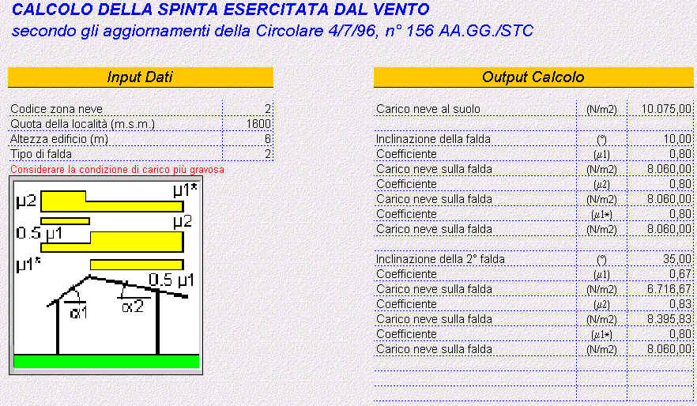

Viene presentato in dettaglio il calcolo del carico neve in funzione del
tipo di copertura ed altri parametri scelti nella fase di input. 1) Input dati : riassume i parametri immessi per il calcolo Viene inoltre data la rappresentazione grafica della tipologia di copertura relativa al calcolo, completa di schema e descrizione dei coeffcienti di carico previsti dalla norma. A titolo di esempio si riporta il calcolo eseguito per una copertura a due falde: ---------------------- *** ------------------------ 
|